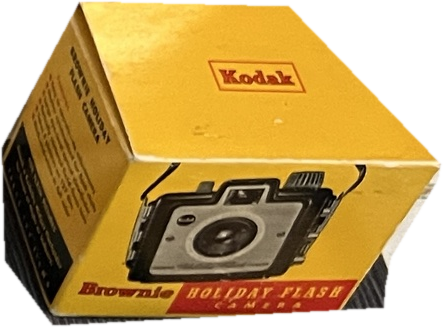

<title>A-Antique Moodboard</title>
<meta name="claude:viewport-fit-sides" content="cover">
<link rel="preconnect" href="https://fonts.googleapis.com">
<link rel="preconnect" href="https://fonts.gstatic.com" crossorigin>
<link rel="stylesheet" href="https://fonts.googleapis.com/css2?family=JetBrains+Mono:ital,wght@0,300;0,400;1,300;1,400&display=swap">
<script src="https://cdnjs.cloudflare.com/ajax/libs/gsap/3.12.5/gsap.min.js"></script>
<style>
/* Layout: Mode E 格線(左欄章節標籤 / 右欄內容)。舞台是一本攤開的書:白頁上,左頁內縮一塊淺灰底版放物件,右頁放文字。
   Color: --bg/--fg 兩色;舞台固定 paper #fff / plate #f3f3f3 / ink #000(不隨主題反轉);物件原色只存在照片內。
   Type: 全站英文、等寬。JetBrains Mono 300/400,標籤全大寫,內文句首大寫。 */
:root {
  --bg: #ffffff;
  --fg: #000000;
  --paper: #ffffff;
  --plate: #f3f3f3;
  --ink: #000000;
  --gutter: 24px;
  --mono: "JetBrains Mono", "Courier New", system-ui, monospace;
}
@media (prefers-color-scheme: dark) {
  :root:not([data-theme="light"]) { --bg: #000000; --fg: #ffffff; color-scheme: dark; }
}
:root[data-theme="dark"] { --bg: #000000; --fg: #ffffff; color-scheme: dark; }
@media (min-width: 900px) { :root { --gutter: 60px; } }

* { box-sizing: border-box; border-radius: 0; }
body {
  background: var(--bg);
  color: var(--fg);
  font-family: var(--mono);
  font-weight: 300;
  font-size: 12px;
  line-height: 1.6;
  letter-spacing: 0.1em;
  text-transform: uppercase;
  padding-block: 24px 40px;
  padding-left: max(var(--gutter), env(safe-area-inset-left, 0px));
  padding-right: max(var(--gutter), env(safe-area-inset-right, 0px));
}
h1, h2, h3, p, ul, ol, dl, dd, figure, fieldset { margin: 0; padding: 0; }
ul, ol { list-style: none; }
h1, h2, h3 { font-weight: 400; font-size: clamp(14px, 1.2vw, 18px); line-height: 1.2; }
em { font-style: italic; }
a, button { color: inherit; font: inherit; letter-spacing: inherit; text-transform: inherit; }
a { text-decoration: none; }
a:hover, button:hover { text-decoration: underline; }
button { background: none; border: 0; padding: 0; cursor: pointer; text-align: left; }
:focus-visible { outline: 2px solid var(--fg); outline-offset: 0; }

.top { display: grid; gap: 8px; padding-bottom: 40px; }
.top .meta { display: flex; flex-wrap: wrap; gap: 4px 24px; }

section { border-top: 1px solid var(--fg); padding-block: 20px 56px; display: grid; grid-template-columns: minmax(0, 1fr); gap: 20px 12px; }
section > .label { display: grid; gap: 4px; align-content: start; }
section > .body { min-width: 0; display: grid; gap: 28px; }
@media (min-width: 900px) {
  section { grid-template-columns: repeat(12, minmax(0, 1fr)); }
  section > .label { grid-column: 1 / span 3; }
  section > .body { grid-column: 4 / span 9; }
  section.wide > .body, section.wide > .label { grid-column: 1 / -1; }
}
.note { font-size: 11px; }
.kv { display: grid; grid-template-columns: 12ch minmax(0, 1fr); gap: 6px 12px; }
.kv dt { font-weight: 400; }

/* ---------- STAGE ---------- */
.stage-wrap { display: grid; justify-items: center; }
.stage {
  position: relative; overflow: hidden; container-type: inline-size;
  width: min(100%, calc((100dvh - 120px) * 1.41));
  aspect-ratio: 1.41 / 1;
  background: var(--paper); color: var(--ink);
  outline: 1px solid var(--fg);
}
@media (max-width: 699px) { .stage { width: 100%; aspect-ratio: 9 / 19; } }
.pg { position: absolute; inset: 0; font-size: clamp(8.5px, 0.95cqi, 11px); line-height: 1.7; }
@media (max-width: 699px) { .pg { font-size: 10px; } }
.pg a, .pg button { color: var(--ink); }
.pg :focus-visible { outline-color: var(--ink); }

.plate { position: absolute; left: 2.5%; top: 3.5%; width: 95%; height: 93%; background: var(--plate); transform-origin: 0 0; }
.obj { position: absolute; inset: 0; display: grid; place-items: center; cursor: pointer; }
.obj img { display: block; width: 38%; height: auto; max-width: 100%; transform: scale(1.3); }
@media (max-width: 699px) { .obj img { width: 70%; transform: scale(1.15); } }

.pm span, .pm a { position: absolute; }
.pm .tl { top: 2.6em; left: 2.8em; }
.pm .tr { top: 2.6em; right: 2.8em; text-align: right; }
.pm .bl { bottom: 2.6em; left: 2.8em; }
.pm .bc { bottom: 2.6em; left: 50%; transform: translateX(-50%); white-space: nowrap; }
@media (max-width: 699px) { .pm .bc { display: none; } }
.toggle { position: absolute; right: 2.8em; bottom: 2.6em; z-index: 3; }

.gutter { position: absolute; background: var(--ink); opacity: 0; pointer-events: none; left: 50%; top: 0; bottom: 0; width: 1px; transform-origin: top; }
@media (max-width: 699px) { .gutter { left: 0; right: 0; top: 50%; bottom: auto; width: auto; height: 1px; transform-origin: left; } }

.lm, .fl { position: absolute; opacity: 0; visibility: hidden; }
.lm { left: 4.5%; top: 86.5%; display: grid; gap: 0; }
.fl { left: 4.5%; bottom: 2.6em; }
@media (max-width: 699px) { .lm { top: 48.5%; } .fl { display: none; } }

.rp { position: absolute; left: 50%; right: 0; top: 0; bottom: 0; padding: 3.2em 4em 3em 3.6em; display: flex; flex-direction: column; gap: 1.3em; pointer-events: none; }
.rp > * { opacity: 0; visibility: hidden; }
@media (max-width: 699px) { .rp { left: 0; top: 50%; padding: 2em 2em 4.4em; gap: 0.9em; } .rp .story { display: none; } }
.rp .num { align-self: flex-end; font-size: 1.5em; font-weight: 400; line-height: 1; }
.rp h2 { font-size: 1.25em; line-height: 1.35; }
.rp .sub { font-weight: 400; margin-bottom: 0.3em; }
.rp p { margin: 0; text-transform: none; letter-spacing: 0.03em; line-height: 1.75; }
.rp .meta { margin-top: auto; display: grid; grid-template-columns: 11ch minmax(0, 1fr); gap: 0.15em 1em; }
.rp .meta dt { font-weight: 400; font-style: italic; }
.rp .fr { align-self: flex-end; position: absolute; right: 4em; bottom: 2.6em; }
@media (max-width: 699px) { .rp .fr { display: none; } }

/* ---------- Index ---------- */
.sheet { display: grid; gap: 6px; grid-template-columns: repeat(5, minmax(0, 1fr)); }
@media (min-width: 700px) { .sheet { grid-template-columns: repeat(7, minmax(0, 1fr)); } }
@media (min-width: 1100px) { .sheet { grid-template-columns: repeat(13, minmax(0, 1fr)); } }
.tile { position: relative; aspect-ratio: 1 / 1; background: var(--plate); color: #000; display: grid; place-items: center; font-size: 11px; letter-spacing: 0.04em; }
.tile span { position: absolute; top: 4px; left: 5px; }
.tile img { width: 72%; height: auto; display: block; }

/* ---------- Anatomy / Type / Colour ---------- */
.anat { display: grid; gap: 14px 12px; grid-template-columns: minmax(0, 1fr); }
@media (min-width: 700px) { .anat { grid-template-columns: 14ch minmax(0, 1fr); } }
.anat dt { font-weight: 400; }


.swatches { display: grid; gap: 20px 16px; grid-template-columns: repeat(auto-fit, minmax(120px, 1fr)); }
.sw { display: grid; gap: 6px; align-content: start; }
.sw i { display: block; aspect-ratio: 1 / 1; outline: 1px solid var(--fg); }
.sw b { font-weight: 400; }

/* ---------- Type specimen ---------- */
.spec { display: grid; gap: 10px; padding-top: 14px; border-top: 1px solid var(--fg); }
.spec .num { font-size: 18px; font-weight: 400; }
.spec .ttl { font-size: 15px; font-weight: 400; line-height: 1.35; }
.spec .bd { font-size: 12px; text-transform: none; letter-spacing: 0.03em; line-height: 1.75; }
.spec .lb { font-size: 12px; font-style: italic; }

footer { border-top: 1px solid var(--fg); padding-top: 20px; line-height: 2; }
</style>

<header class="top">
  <h1>A-ANTIQUE ↘ MOOD BOARD [A / TOP-DOWN / 3D / MONO] — REV. 3</h1>
  <p class="meta"><span>SHELF — OBJECT BY OBJECT</span><span>EDMONTON — TORONTO</span><span>ENGLISH ONLY</span></p>
</header>

<section class="wide">
  <div class="label"><h2>01 — Landing, then open</h2><span class="note">[試玩:點物件或 ↘ OPEN。物件為 Kodak 盒的暫代去背,正式版以重拍取代]</span></div>
  <div class="body">
    <div class="stage-wrap">
      <div class="stage" id="stage" aria-label="Landing poster that opens into a two-page spread">
        <div class="pg">
          <div class="plate" id="plate"></div>
          <div class="pm" id="pm">
            <span class="tl">A-ANTIQUE</span>
            <a class="tr" href="#index">INDEX — 26 ↘</a>
            <span class="bl">No. 012</span>
            <span class="bc">KODAK BROWNIE HOLIDAY FLASH CAMERA</span>
          </div>
          <div class="gutter" id="gutter"></div>
          <div class="obj" id="obj"></div>
          <div class="lm" id="lm"><span>FIG. 012 — TOP-DOWN</span><span>3D — [PENDING SCAN]</span><span>[PLACEHOLDER: 3/4 CROP]</span></div>
          <div class="fl" id="fl">024</div>
          <article class="rp" id="rp">
            <div class="num">012.</div>
            <h2>KODAK BROWNIE HOLIDAY FLASH CAMERA — BOX</h2>
            <p class="p1">A yellow carton with the camera printed on its front. The side panel carries instructions in a narrow column of small type. [Tone sample. Replace with the dig story: where it was found, what it cost, who sold it.]</p>
            <div class="story">
              <div class="sub">RELATED STORY — [TITLE]</div>
              <p>[Second paragraph: the object, the brand, or the place it was found.]</p>
            </div>
            <dl class="meta">
              <dt>Item:</dt><dd>Camera box</dd>
              <dt>Brand:</dt><dd>Kodak — Eastman Kodak Company</dd>
              <dt>Materials:</dt><dd>Printed card</dd>
              <dt>Dimensions:</dt><dd>[W × D × H MM — TO MEASURE]</dd>
              <dt>Found:</dt><dd>[CITY], [YEAR]</dd>
            </dl>
            <div class="fr">025</div>
          </article>
          <button class="toggle" id="toggle" type="button" aria-expanded="false">↘ OPEN</button>
        </div>
      </div>
    </div>
  </div>
</section>

<section class="wide" id="index">
  <div class="label"><h2>02 — Index, the whole shelf at once</h2><span class="note">[參照書封底的縮圖總覽。每件一格,重拍後逐格填入]</span></div>
  <div class="body">
    <div class="sheet" id="sheet"></div>
    <p class="note"><em>CONTACT SHEET — ONE TILE PER OBJECT. 13 × 2 ON DESKTOP, 7 × 4 ON TABLET, 5 × 6 ON PHONE.</em></p>
  </div>
</section>

<section>
  <div class="label"><h2>03 — Spread anatomy</h2><span class="note">[已對照你提供的內頁圖]</span></div>
  <div class="body">
    <dl class="anat">
      <dt>Landing</dt><dd>One object on one plate, nothing else. Four labels only. Same object, same plate as the left page it opens into.</dd>
      <dt>Left page</dt><dd>White page, light-grey plate inset from the edges. Folio in the outer lower corner, figure caption under the plate. No rule, no shadow other than the one in the photograph.</dd>
      <dt>Photo rule</dt><dd>Seamless light-grey backdrop (#F3F3F3). Object top-down, centred, about half the plate width. Every object also gets a 3D model; the still stays top-down. Soft contact shadow. No props.</dd>
      <dt>Right page</dt><dd>Number top right (012.), title, story, a sub-head for the related story, then Item / Brand / Materials / Dimensions pinned to the foot. Folio in the outer lower corner.</dd>
      <dt>Index</dt><dd>A contact sheet of every plate. It is the shelf; the spread is what you get when you pick one up.</dd>
      <dt>Grouping</dt><dd>By place of origin (Canada, U.S.A., Germany…), the way the reference book groups its objects.</dd>
    </dl>
    <p class="note">[NOTE] 從你的 4 張圖確認的事:封面純白布面、文字極小且集中在右下;封底是 17 × 8 的縮圖總覽;內頁左頁是淺灰底版內縮在白頁上,物件正面、置中偏下、佔版面很小;右頁編號在右上、標題粗體、內文後接「相關故事」小標,底部是 Item / Brand / Materials / Dimensions;頁碼在外側下角。書中字體是無襯線,不是等寬,我們用 mono 是你的決定,只借它的粗細階層與位置。<a href="https://www.everydayobject.us/eo-books-general-selection/" target="_blank" rel="noopener">↘ SOURCE</a></p>
  </div>
</section>

<section>
  <div class="label"><h2>04 — Type, JetBrains Mono</h2><span class="note">[已鎖定]</span></div>
  <div class="body">
    <dl class="kv">
      <dt>Weights</dt><dd>300 for running text, 400 for numbers, titles and labels. Nothing heavier.</dd>
      <dt>Number</dt><dd>1.5em, 400. Top right of the right page.</dd>
      <dt>Title</dt><dd>1.25em, 400, all caps.</dd>
      <dt>Labels</dt><dd>1em, italic, all caps. Item: Brand: Materials: Dimensions: Found:</dd>
      <dt>Paragraphs</dt><dd>1em, 300, sentence case, 0.03em tracking, 1.75 line height. The only text that is not all caps.</dd>
    </dl>
    <div class="spec">
      <span class="num">012.</span>
      <span class="ttl">KODAK BROWNIE HOLIDAY FLASH CAMERA — BOX</span>
      <span class="bd">A yellow carton with the camera printed on its front. The side panel carries instructions in a narrow column of small type.</span>
      <span class="lb">Item: Camera box — Brand: Kodak — Dimensions: [W × D × H MM]</span>
    </div>
  </div>
</section>

<section>
  <div class="label"><h2>05 — Colour</h2><span class="note">[顏色只活在物件裡]</span></div>
  <div class="body">
    <div class="swatches">
      <div class="sw"><i style="background:#ffffff"></i><b>PAPER</b><span>#FFFFFF</span></div>
      <div class="sw"><i style="background:#f3f3f3"></i><b>PLATE</b><span>#F3F3F3</span></div>
      <div class="sw"><i style="background:#000000"></i><b>INK</b><span>#000000</span></div>
      <div class="sw"><i style="background:#f0b630"></i><b>KODAK YELLOW</b><span>#F0B630</span></div>
      <div class="sw"><i style="background:#aa3a1d"></i><b>KODAK RED</b><span>#AA3A1D</span></div>
      <div class="sw"><i style="background:#c3442d"></i><b>FIRST AID RED</b><span>#C3442D</span></div>
      <div class="sw"><i style="background:#2b542c"></i><b>ENAMEL GREEN</b><span>#2B542C</span></div>
    </div>
    <p class="note">[NOTE] UI 只用紙、底版、墨三個中性色。後四個色從原照取樣,只會出現在照片裡,介面不使用,所以每頁的色彩由那一件物件決定。底版 #F3F3F3 是從參照圖目測,重拍時以實際背景為準,屆時改一個 token 即可。</p>
  </div>
</section>

<section>
  <div class="label"><h2>06 — Motion</h2><span class="note">[transform 已解除]</span></div>
  <div class="body">
    <dl class="kv">
      <dt>Open</dt><dd>The plate shrinks into the left page while the object travels to its centre and scales down. 900ms, expo.out.</dd>
      <dt>Gutter</dt><dd>Line draws from the top edge. Same 900ms.</dd>
      <dt>Right page</dt><dd>Blocks fade in and rise 14px, 60ms stagger, from 350ms. 500ms, power3.out.</dd>
      <dt>Close</dt><dd>Same timeline reversed at 1.6× speed.</dd>
      <dt>Banned</dt><dd>Bounce, elastic, hover lift, colour change on hover. Hover is underline only.</dd>
      <dt>Reduced motion</dt><dd>Timeline jumps to its end state. No travel.</dd>
    </dl>
  </div>
</section>

<section>
  <div class="label"><h2>07 — Locked</h2><span class="note">[你的選擇,已套用]</span></div>
  <div class="body">
    <dl class="kv">
      <dt>Direction</dt><dd>A — Index (the shelf) and Spread (one object).</dd>
      <dt>Pose</dt><dd>Top-down for every still.</dd>
      <dt>3D</dt><dd>All 26 objects. 17 through Meshy, 9 flat items (paper, booklets, cards, a disc) built locally.</dd>
      <dt>Plate</dt><dd>Light grey, #F3F3F3.</dd>
      <dt>Paragraphs</dt><dd>Sentence case. Labels, titles and numbers stay all caps.</dd>
      <dt>Face</dt><dd>JetBrains Mono.</dd>
      <dt>Motion</dt><dd>Transforms on. expo.out, 900ms.</dd>
      <dt>Image</dt><dd>Native colour.</dd>
    </dl>
    <p class="note">[NOTE] 一個技術事實,提醒一次:Meshy 的 image-to-3D 吃 1 到 4 張同一物件的不同角度,第一張是正面主視角。只有俯視一張,模型會很差。所以 Meshy 的 17 件每件拍「1 張俯視定裝照(給網站)+ 4 張不同角度(給 Meshy)」,平面的 9 件只要正面加選用的背面,共約 100 張。</p>
  </div>
</section>

<section>
  <div class="label"><h2>08 — 3D pipeline</h2><span class="note">[已建在 repo,見 PR]</span></div>
  <div class="body">
    <dl class="kv">
      <dt>Input</dt><dd>shoot/&lt;id&gt;/views/ — 1 to 4 photos, sorted by file name, first one is the front.</dd>
      <dt>Request</dt><dd>POST /openapi/v1/multi-image-to-3d, meshy-7.1, textured, PBR on, GLB only.</dd>
      <dt>Cost</dt><dd>30 credits per object with textures. 17 Meshy objects = 510 credits, against 774 in the account. Failed tasks are refunded.</dd>
      <dt>Queue</dt><dd>Pro plan allows 10 pending or running tasks at once, shared with the Meshy web app.</dd>
      <dt>Output</dt><dd>GLB → resize textures to 1024, WebP, Draco → R2.</dd>
      <dt>Flat items</dt><dd>001, 010, 011, 013, 014, 015, 016, 017, 023 become thin slabs built from their photos. Photo on the front, optional back photo, paper tone on the edges. No credits.</dd>
      <dt>Guard</dt><dd>One object per run unless you pass a larger limit. The run stops if the balance cannot cover it. Task ids are saved before polling, so a re-run resumes instead of paying twice.</dd>
    </dl>
  </div>
</section>

<footer>
  <div>↘ A-ANTIQUE</div>
  <div>EDMONTON — TORONTO</div>
</footer>

<script>
(function () {
  var stage = document.getElementById("stage");
  var plate = document.getElementById("plate");
  var img = document.querySelector("#obj img");
  var obj = document.getElementById("obj");
  var pm = document.getElementById("pm");
  var gutter = document.getElementById("gutter");
  var lm = document.getElementById("lm");
  var fl = document.getElementById("fl");
  var rp = document.getElementById("rp");
  var toggle = document.getElementById("toggle");
  var rbs = Array.prototype.slice.call(rp.children);
  var reduce = window.matchMedia && matchMedia("(prefers-reduced-motion: reduce)").matches;
  var open = false, tl = null, hasGsap = !!window.gsap;
  var L = { x: 0.025, y: 0.035, w: 0.95, h: 0.93 };

  function metrics() {
    var W = stage.clientWidth, H = stage.clientHeight, horiz = W >= 700;
    var R = horiz ? { x: 0.045, y: 0.075, w: 0.40, h: 0.77 } : { x: 0.06, y: 0.03, w: 0.88, h: 0.44 };
    return {
      horiz: horiz,
      px: (R.x - L.x) * W, py: (R.y - L.y) * H,
      sx: R.w / L.w, sy: R.h / L.h,
      ox: (R.x + R.w / 2 - 0.5) * W, oy: (R.y + R.h * 0.52 - 0.5) * H,
      s: horiz ? 0.53 : 0.63, s0: horiz ? 1.3 : 1.15
    };
  }

  function build() {
    if (!hasGsap) return;
    var m = metrics();
    if (tl) tl.kill();
    gsap.set(gutter, { scaleX: 1, scaleY: 1 });
    gsap.set(img, { x: 0, y: 0, scale: m.s0 });
    gsap.set(plate, { x: 0, y: 0, scaleX: 1, scaleY: 1 });
    var gv = m.horiz ? { scaleY: 0 } : { scaleX: 0 };
    var ge = m.horiz ? { scaleY: 1 } : { scaleX: 1 };
    tl = gsap.timeline({ paused: true, defaults: { ease: "expo.out" } });
    tl.to(pm.querySelectorAll(".tl,.tr,.bl,.bc"), { autoAlpha: 0, duration: 0.3, ease: "power3.out" }, 0)
      .to(plate, { x: m.px, y: m.py, scaleX: m.sx, scaleY: m.sy, duration: 0.9 }, 0)
      .to(img, { x: m.ox, y: m.oy, scale: m.s, duration: 0.9 }, 0)
      .fromTo(gutter, Object.assign({ autoAlpha: 1 }, gv), Object.assign({ autoAlpha: 1, duration: 0.9 }, ge), 0)
      .to([lm, fl], { autoAlpha: 1, duration: 0.5, ease: "power3.out" }, 0.4)
      .fromTo(rbs, { autoAlpha: 0, y: 14 }, { autoAlpha: 1, y: 0, duration: 0.5, ease: "power3.out", stagger: 0.06 }, 0.35);
    tl.progress(open ? 1 : 0);
    if (reduce) tl.timeScale(40);
  }

  function setLabel() {
    toggle.textContent = open ? "↖ CLOSE" : "↘ OPEN";
    toggle.setAttribute("aria-expanded", String(open));
  }

  function fallback() {
    var m = metrics();
    plate.style.transform = open ? "translate(" + m.px + "px," + m.py + "px) scale(" + m.sx + "," + m.sy + ")" : "none";
    img.style.transform = open ? "translate(" + m.ox + "px," + m.oy + "px) scale(" + m.s + ")" : "scale(" + m.s0 + ")";
    [].forEach.call(pm.children, function (e) { e.style.visibility = open ? "hidden" : "visible"; });
    [lm, fl].forEach(function (e) { e.style.opacity = open ? 1 : 0; e.style.visibility = open ? "visible" : "hidden"; });
    gutter.style.opacity = open ? 1 : 0;
    rbs.forEach(function (e) { e.style.opacity = open ? 1 : 0; e.style.visibility = open ? "visible" : "hidden"; });
  }

  function flip() {
    open = !open; setLabel();
    if (!hasGsap) { fallback(); return; }
    if (open) { tl.timeScale(reduce ? 40 : 1).play(); }
    else { tl.timeScale(reduce ? 40 : 1.6).reverse(); }
  }

  toggle.addEventListener("click", flip);
  obj.addEventListener("click", flip);

  var rt;
  window.addEventListener("resize", function () { clearTimeout(rt); rt = setTimeout(function () { build(); if (!hasGsap && open) fallback(); }, 120); });
  build();
  setLabel();

  /* index contact sheet */
  var sheet = document.getElementById("sheet");
  for (var i = 1; i <= 26; i++) {
    var t = document.createElement("div");
    t.className = "tile";
    var n = document.createElement("span");
    n.textContent = (i < 10 ? "00" : "0") + i;
    t.appendChild(n);
    if (i === 12) {
      var im = document.createElement("img");
      im.src = "kodak.png"; im.alt = "Kodak Brownie Holiday Flash Camera box"; im.width = 443; im.height = 327;
      t.appendChild(im);
    }
    sheet.appendChild(t);
  }

})();
</script>
